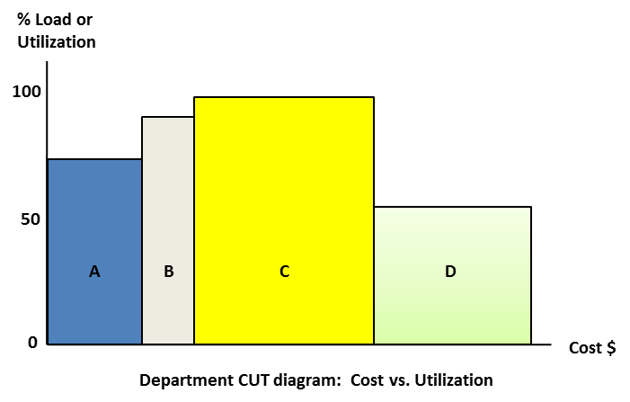

диаграмма использования затрат (cost utilization diagram, диаграмма ДИЗ, диаграмма CUT) - гистограмма, которая сравнивает использование или загрузку каждого из ресурсов организации с его стоимостью. Высота полосы для каждого ресурса указывает на его использование, а ширина указывает на его стоимость.
Иллюстрация:

См. : парадигма мира затрат
#производство
#экономика
Примечание АВ:
1.ДЕ: Это ABC костинг (функционально-стоимостной анализ, ФСА) - какая-то хрень в парадигме затрат. Для чего ссылаются не понятно. Читать Корбит, учет прохода. "Throughput accounting".
2. Ссылка в разбором что такое ФСА: https://www.cfin.ru/management/what_is_abc.shtml
3. При разборе ИТ-компании и анализа деятельности инженера наиболее интересным графиком будет отношение КОЛИЧЕСТВО выполненного объема к СТОИМОСТИ инженера в месяц.
Синоним: cost utilization diagram